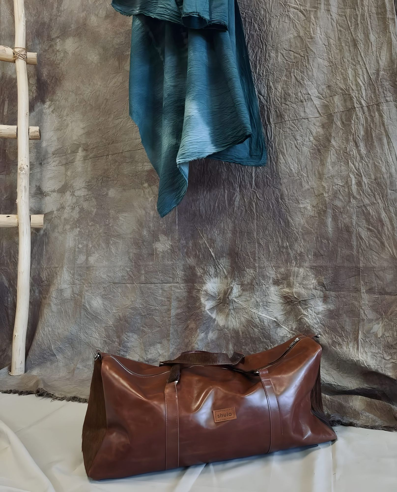
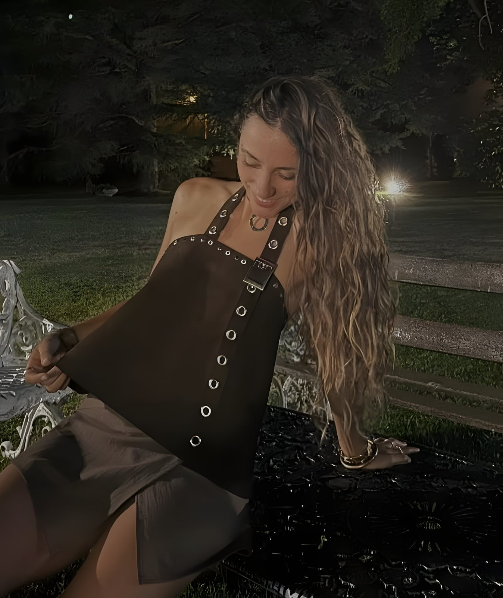
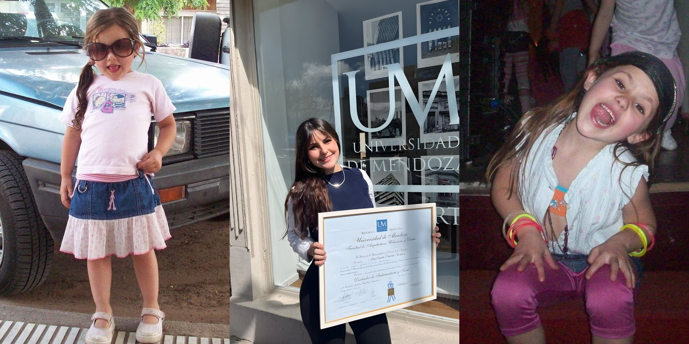

shula
100% cuero vacuno | hecho a mano
Catálogo
Nuestras piezas
Viendo
Piezas destacadas
Todo hecho a mano.
Procesos reales.
Personalizados
¿Tenés una idea?
Vos elegís el diseño, en Shula lo hacemos realidad.

- CueroGamuza, con pelo, croco, etc.
- ColorEl que te guste
- MedidasA tu medida
- DetallesTachas, trenzados, flecos
Cómo pedir
- 01Elegís un producto
Del catálogo o tu idea personalizada.
- 02Armás tu pedido
Aclarando cuero, color, medidas y detalles. Se manda solo a nuestro WhatsApp.
- 03Lo charlamos
Definimos cada detalle juntas y enviamos cotización final.
Sobre shula

Detrás de esta marca estoy yo.
Soy Martina, creadora de Shula y diseñadora de indumentaria y textil. Desde siempre me gustó crear con las manos.
Después de realizar tantos trabajos con tela, descubrí el cuero en mis pasantías universitarias, un mundo del cual no pude salir.
Hoy diseño y confecciono piezas de cuero vacuno, trabajando a mano y cuidando cada detalle. Desde carteras y materas hasta cinturones y accesorios.
Shula es esto: diseño, oficio y pasión por crear piezas que duren.
@shula.rc
Devolución
Cambios y devoluciones
En Shula cada pieza está pensada y elaborada con dedicación. Queremos que estés feliz con tu elección, por lo que, si alguna pieza o producto no llegó como esperabas, te contamos sobre la política de cambios:
- Se aceptarán productos dentro de los 5 días desde que recibiste el pedido.
- El costo del envío por cambios corre por cuenta del cliente. Si el producto presenta una falla o hubo un error en el pedido, nos hacemos cargo desde Shula de solucionarlo.
- El producto debe estar en perfectas condiciones, tal cual como se envió, con su etiqueta, relleno y packaging correspondiente.
- Piezas personalizadas: los productos confeccionados especialmente a pedido o personalizados no admiten cambios ni devoluciones por elección del cliente, salvo que presenten defectos o errores de elaboración.
- Cómo solicitarlo: contactanos por WhatsApp o Instagram indicando los datos de tu compra y el motivo de tu solicitud.